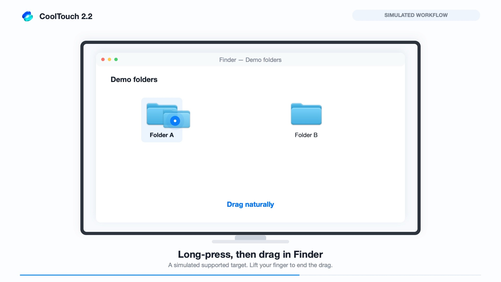

Plug in your touchscreen.
Connect video and USB touch input. Some screens carry both over a single USB-C cable.
CoolTouch 2.2.1
An external touchscreen can show your Mac—yet touch may not work out of the box.
CoolTouch adds taps, scrolling and gestures on compatible USB touchscreens.
Apple silicon · macOS 15+ · No card required · No automatic charge
FROM CONNECTION TO TOUCH
CoolTouch checks available touch input first.
When it needs your help, the next step is clear.
Connect video and USB touch input. Some screens carry both over a single USB-C cable.
Follow clear single-finger and two-finger instructions. There’s no countdown to rush you.
Use your mouse to confirm the touchscreen when needed. Adjust alignment only if it needs it.
SETUP & GESTURE WALKTHROUGH
From connecting a screen to scrolling, zooming and navigating your Mac.
This animated simulation explains the flow. It is separate from the real footage above.
LESS REACHING FOR YOUR MOUSE
Open a folder in Finder. Scroll a PDF in Preview. Pinch to read the fine print.
Tap to click, double-tap to open, and use supported long-press menus and dragging.
Gesture behavior depends on the app, region and your macOS settings.

A GOOD FIT STARTS HERE
macOS does not provide native touch and gesture support for every external USB touchscreen. CoolTouch fills that gap on compatible hardware. It doesn’t add touch to a MacBook’s built-in screen.
M1 or later, running macOS 15 or later.
Your screen must send supported touch input over USB. A video cable alone isn’t enough.
If touch isn’t confirmed, follow the guided check, review a support report or retry when ready.
Not every controller or input format is supported. Unsure about your setup? Ask us before buying.
ALREADY USING COOLTOUCH?
In 2.2.1, pinch to zoom a Chrome page or a supported embedded map. Pinch an open photo to zoom in steps, rotate Apple Maps with two fingers, or scroll sideways through a row of albums in Music.
On an Apple silicon Mac running macOS 15 or later, open CoolTouch in the menu bar and choose Check for Updates. Upgrading from 2.2.0 keeps your screen mapping, calibration and gesture settings. Your existing license includes this update. If you can’t open the app, use the download and license key in your original Gumroad purchase.
Using macOS 14? Keep your compatible version. The 2.2.1 update requires macOS 15 or later.
A FEW USEFUL ANSWERS
A screen can display your Mac correctly while touch does not respond. Video and touch input are separate: connecting a display does not guarantee macOS can use its touch controller. CoolTouch adds supported touch input and gestures for compatible external USB touchscreens.
Compatibility depends on the touchscreen controller and its input format. CoolTouch checks the touch input and can guide you through supported alternatives, but we do not promise universal compatibility.
No. Matching saved bindings are reused. Confirmation may be needed when screen identity is ambiguous. Calibration is available when touch alignment needs adjustment.
In Chrome, pinch over text to zoom the whole page. On supported embedded maps, pinch inside the map to zoom it while the surrounding page stays the same size. Pinch a PDF in Preview to zoom smoothly. In Photos, open a photo and pinch to change its zoom level in steps. In Apple Maps, turn two fingers together to rotate the map. In Music, slide up or down through a list, or sideways through a scrollable row of albums.
In Preview, swipe with one finger to scroll a PDF. To select text, tap a word, then touch it again and drag across the text. In Finder, press and hold a file for its menu. Keep your finger down and drag to move the item.
The touch check includes a clear “didn’t respond” option. Where supported, CoolTouch tries another mode. If matching remains unconfirmed, you can retry or save a support report for troubleshooting.
No. The current product is a $19 one-time purchase for one user on one Mac, with lifetime updates. Try every feature free for 7 days from first launch. No card required and no automatic charge. Buy anytime for $19 to keep using CoolTouch on one Mac, with lifetime updates. New purchases do not include a voluntary 14-day money-back guarantee. Purchases made under the previous guarantee keep their original terms. Statutory rights and applicable Gumroad refund rules still apply. A compatible external touchscreen is separate hardware.
Unzip the download, move CoolTouch to Applications and open it. Grant Accessibility permission when prompted, then follow any setup instructions. Activate with the license key from your Gumroad receipt.
One-time purchase · Lifetime updates
Apple silicon · macOS 15+ · Compatible external USB touchscreen required